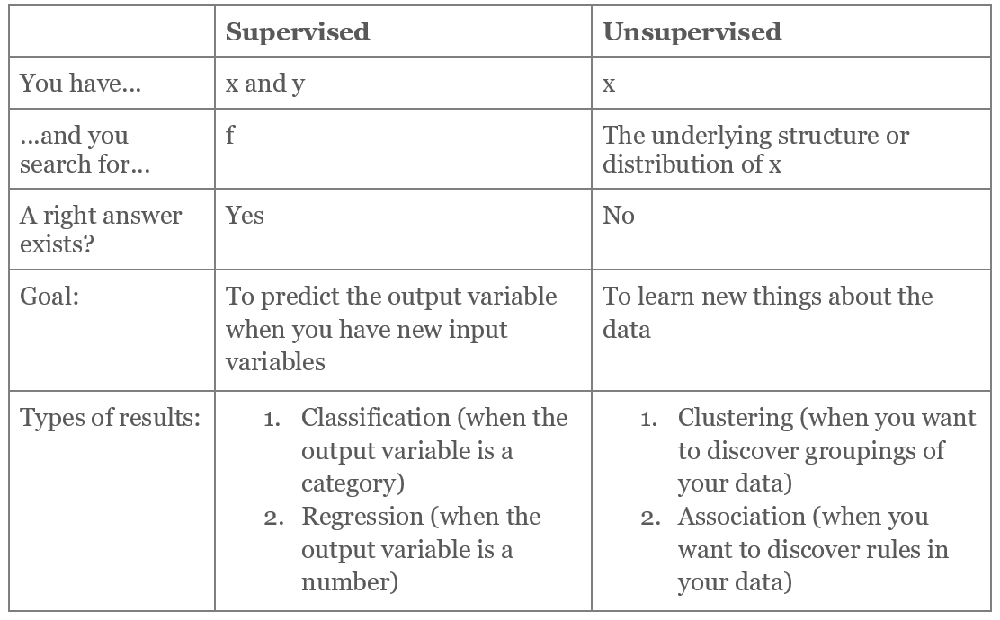

Artificial intelligence - beyond the hype
The first time I came close to a practical implementation of machine learning, and really grasped the concept of artificial intelligence, was during my studies at KTH. A fellow classmate was part of a project at KI, Karolinska Institutet, in Solna. The aim of the project was to develop a model which used machine learning for image classification. In more detail, the algorithm determined the severity of bone fractures based on x-ray images, which freed up time for radiologists, who could focus on more difficult cases. Overall, it resulted in quicker, cheaper and perhaps more objective diagnoses as well as better allocation of resources. I was truly fascinated as I saw the potential in the methodology and a question has puzzled me ever since: if machine learning can replace doctors in certain parts of their profession, how can we explore and unleash AI’s full potential in further areas?
With that said, that project at KI still goes on today, which demonstrates an important and underestimated point with AI that I want to make, namely, that it is very time consuming. Not only is it time consuming, another fact that people seem unaware of is that it has been around for quite some time. Linear regression analysis is the earliest, simplest and most common form of machine learning, dating back about a 100 years. Even so, the application of machine learning has accelerated recently and the main factors behind this development are the increased computational capacity as well as the access to and amount of data. The fact is that there is an enormous buzz around artificial intelligence nowadays. From popular TV series and movies to voice assistants in phones to face recognitions in photos - we have all been amazed by it and exposed to it in some way or another.
Companies’ approach to AI
Established companies, venture capitalists and startups seem mesmerized by the methodology as they are very eager to jump on the AI train and are almost desperate to invest in machine learning. Venture capitalists and business angels are almost throwing their money on startups in this area and startups are making more money off the awards and prizes they receive, along with the publicity around their machine learning products and services, rather than from actual revenue from consumers.
The critical thinking that is standard procedure in any other huge investment decision goes out the window as soon as someone mentions AI. Some startups and established businesses, even knowingly, call their methods machine learning, even if they are not, just in order to get the funding or publicity that follows it. No wonder that they do when you realize the PR benefits that come with AI and machine learning. The hype around it cannot be overstated. Hence, AI needs a reality check, so here it goes:
A quick introduction to machine learning
Now, let us go back to basics. A function, y=f(x), consists of x, which is the input variable, and of y, which is the output variable, and a mapping function, f, from x to y. With this, machine learning can be divided into the following two main categories:

Supervised machine learning is the most common and practically applicable, while unsupervised is probably the more hyped. Then we also have partly supervised, partly unsupervised machine learning, called semi-supervised, which is a combination of the two. The important difference between the two main categories, which I tried to illustrate in the above table, is that they solve different problems.
Should you use machine learning to solve your problem?
Here are some concrete actions to take and concepts to look up before you implement machine learning into your business:
- Before thinking about machine learning, start with formulating the problem description. As machine learning is just a method, and the choice of method is part of the problem solving process, you should not start with it. Machine learning may help you go where you need to go, but it is not an answer in itself.
- Use the ‘human in the loop’ approach, kind of like an ‘inverted Turing test’, when determining whether or not machine learning is a good method for your problem. Start by asking yourself if the problem can be solved by a human, while disregarding capacity and speed. If the answer is yes to that question, then AI might be a good way forward.
- When formulating a business case with AI, expect nothing less than that it will take a long time before you receive your return on investment.
Once you have determined that machine learning may be a suitable method to your problem, it is good to be aware of its conditions and limitations.
Conditions and limitations of machine learning
- Check your data and how it is structured. This method demands substantial amounts of data, which is necessary to train the model and to feed to your algorithm.
- Once you have established that you have the necessary quantity of data, it is also important to have the necessary quality of data. It usually takes some form of data cleaning in order to obtain the desired quality. However, do not underestimate the time this takes as it is quite a dreadful task to clean data.
- In supervised machine learning, be aware of the fact that the data must have existing labels. In unsupervised machine learning, on the other hand, the labels will be created by the algorithm.
- Before investing in AI, make sure to scan the market as there are good APIs available that use machine learning. It could be a good idea to explore them first instead of building your own machine learning department from scratch.
- Keep in mind that AI requires heavy mathematics, more so than development.
- The problems that are to be solved must allow for errors, as machine learning is not 100 % fail safe, but rather a game of guessing.
- When building the model, do not expect to find common practices and best case scenarios, not even for the common use case of recommendation engines. The problem often is unique to your business.
Practical applications of machine learning
In order to implement machine learning, the steps that are needed are planning, modeling, testing algorithms, selecting data, cleaning data and, finally, live testing. Once live, it is going to need further iterations and adjustments. An advice is to test as early as possible in a live setting in order to validate that it works from the user and development perspectives. Test small, but always remember the statistical significance - the statistics must still be meaningful. Even if you test small, make sure to run enough iterations.
To mention a few of the many practical applications of machine learning; there are:
- Image, speech and text recognition and creation as well as speech to text conversions
- Recommendation engines (next article, song or movie and so on)
- E-mail spam filters
- Determining user behaviour (particularly in online advertisement targeting)
- Determining creditworthiness and predicting insurance cases
- Diagnostics, such as determining reading ability based on eye pattern

Machine learning is not an achievement in itself
What I have been trying to say throughout this article is that I believe that it is critical to treat machine learning like the method it is. It is just a method and a method should not be a goal in itself. However, many companies treat machine learning as a ‘need-to-have’ and a solution to their problems, which probably is a result of the PR circus around it. AI and machine learning have received enormous publicity and, as a result, I would argue that the two concepts are quite diluted. As such, I am not sure if the publicity is good for the actual scientific progress or business adaptations in this area, or if it harms them.
Hence, one should not treat machine learning as a tool. It does not show up in a neat box at your doorstep, ready to be unwrapped and used right away. It takes a lot of time and resources to build up from scratch. Furthermore, if the data is bad, then it does not matter how good the model is. Everything starts with the data and my previous blog article, Data-driven Decision Making - Do's and Don'ts when Designing the Business Process, covered the topic of data gathering, which is a foundation for AI. To sum up, and despite the PR circus, the potential of AI is dazzling and in this article, I hope that I have made way for practical business implementations of machine learning and crushed some myths along the way.
Finally, I want to wish everyone best of luck iterating your way through the AI circus out there! :)
/Anna